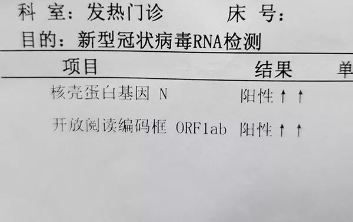

口述实录 | 我作为火神山“网红患者”的全历程
原文链接 备份链接 我是一个写财经文章的，本来传染病这种事情和我八杆子也打不着，可事情就是这么魔幻，一不小心成了火神山医院的“网红患者”。等我出去，我会向大家展示，我的家乡武汉有多美。 口述 | 万先生 整理 | 黄 祺 2月4日早上10 …
实习生 刘旭 澎湃新闻记者 喻琰

1月29日，贾虎（化名）检测出双阳性。 本文图均为受访者供图
2月7日，在家隔离治疗20天后，贾虎（化名）的核酸检测结果出来了，阴性，他终于战胜了新冠肺炎。
得病期间经历的种种，都让贾虎感慨万分。他说，痊愈之后最想做的事情是听一场偶像大桥彩香的演唱会。

2月7日，贾虎（化名）检测结果现实为双阴性。
21岁的贾虎是武汉一所大学大三的学生，主修英语辅修日语。爱好二次元的他寒假期间报了语言班学习日语，准备毕业后去日本从事声优行业的工作。
开始以为只是普通的感冒，贾虎并未在意。直到1月21号，浑身酸疼的症状仍未缓解，疫情相关的报道也逐渐多了起来，贾虎一家人意识到“可能出问题了”，遂立即就医；1月29日，贾虎的核酸检测结果显示为双阳性，正式被确诊为感染新冠肺炎。
确诊后，医院免费发放了药物克力芝，贾虎在家隔离、用药。前后经历了20天，贾虎最终康复。他告诉澎湃新闻（www.thepaper.cn），在这段经历中，特别感谢医护人员。
在医院的时候，他曾注意到一个细节，医生的隔离服品牌每隔几天就会变，杜邦，稳健，3M，金佰利……
“一问才知道，医院采购的早用完了，这些都是社会捐赠的，他们都是英雄。”贾虎说。
*【贾虎口述】*
“确诊的那几天太难受了”
1月17日，那天我在语言学校上课，感觉自己浑身酸痛，可能已经开始发烧了。以为只是普通感冒，我开始服用泰诺，现在想想，泰诺的舒缓作用很有可能掩盖了病情，有点后悔。
1月21日中午，我感觉身体非常酸痛，就联系了我爸，他敏锐地意识到可能出问题了，叫我赶紧回家。傍晚在家量体温，低烧，但我身体仍无特别感觉，因为吃了火锅，我妈提出晚点量体温，如果还是低烧就去医院。晚上11点发现仍然低烧，就立刻去了同济医院。
到那之后发现人很多，我第一次看到医生穿隔离服，病历堆积成山，感觉气氛不太对劲，于是决定去不远处的武汉肺科医院。
顺利挂上急诊后，我查了血常规、肝功能、肺部CT，CT当晚就出结果了，斑片状影，双下肺感染。第二天出来的肝功能显示一切正常，血常规也一切正常，只是超敏C反应蛋白（CRP）略高。
1月25日前后我逐渐开始咳嗽，带有极少量痰，很难咳出。我去武汉肺科医院复查，结果显示病情加重，感染扩散至全肺。CRP升高一般提示急性感染加重，我的CRP飙升至39.76，医生开出输液处方。
第二天起床格外困难，我不断打着寒战，一量体温超过39度。开始家中隔离，待在房间内基本不出来。
28日复查的时候，我肺部感染的情况有所好转，专家组会诊后给了我试剂盒测试资格。
1月29日，我的试剂盒结果新冠病毒双阳性，正式被确诊，医院免费发放了5天的艾滋病毒抗逆转录药物克力芝。由于我的病情继续好转，医院床位紧张，医生叫我回家继续隔离，输液停止，口服药还继续吃着。
那几天真的太难受了，又呕吐又腹泻，咳嗽咳的我整个背都是疼的，也没有食欲。但不吃东西抵抗力上不去，我只好逼着自己吃饭。
“痊愈后最想做的事情是听偶像的演唱会”
病情好转后，我又接受了试剂盒检测。分别检测了两次，结果都为阴性，我痊愈了。回顾治愈的经历，我真的很幸运，活过来后，会更加努力去生活。
现在我恢复的很好，没有什么后遗症，基本和生病前是一样的。等疫情过去，我最想做的事情就是去听我偶像大桥彩香的演唱会。生病期间我看了偶像配音的动漫，给了我很大鼓舞。
武汉封城之后，城市交通停运，很多没有条件的人没办法去医院，耽搁了病情，我心里挺难受的，我唯一庆幸的是我们家里还有辆车。除此之外，在治病期间也遇到了很多让我比较震惊，比较难过的事情。
有一次在医院输液，我旁边的一位老爷爷胳膊肿的老高，吓了我一跳。可能是因为老年人血管比较脆，跑针了。这个老爷爷身边也没人陪护，病人又很多，护士们没有注意到。我赶紧帮他叫来护士，针一拔，老爷爷手背上满是血，真是不忍心看。
还有一次我看到一位八十几岁的老奶奶，在病床上吸氧。她吸氧的那个声音像是在呻吟，听着都能感觉到她很难受，（那个）声音我忘不掉。
希望病人们都心平气和，别对医生护士发脾气，他们在一线都是拿命去拼。在医院的时候我还注意到一个细节，医生的隔离服品牌每隔几天就会变，杜邦，稳健，3M，金佰利……一问才知道，医院采购的早用完了，这些都是社会捐赠的，他们都是英雄。
本期编辑 常琛
推荐阅读


原文链接 备份链接 我是一个写财经文章的，本来传染病这种事情和我八杆子也打不着，可事情就是这么魔幻，一不小心成了火神山医院的“网红患者”。等我出去，我会向大家展示，我的家乡武汉有多美。 口述 | 万先生 整理 | 黄 祺 2月4日早上10 …
原文链接 备份链接 作者：刘倩 来源：*商业人物*（ID：*****biz-leaders）* 周宁没有想过自己会得新冠肺炎，就像他没有想过从小到大经常光顾的华南海鲜市场会成为给他带来这场无妄之灾的罪魁祸首。他没有海鲜市场暴露史，却因为家 …
原文链接 备份链接 原创 钟玄雅 真实故事计划 真实故事计划 4天前 武汉是世界上大学生最多的城市之一。新型冠状病毒肺炎疫情爆发后，一百余万大学生返乡，成为各地防止传染的重点防控隔离对象，遭遇着忧虑、歧视和隐私泄露。疫情给这群新鲜人上了社 …
原文链接 备份链接 摘要：年前一次同学聚会后，在武汉读医科的河南女孩李霖琳开始感到不舒服，返乡后确诊患上新型冠状病毒肺炎，住进医疗条件不太充分的县医院隔离病房。她的家人也出现发烧症状，母亲确诊。从1月23日发热到2月1日基本康复，李霖琳运 …
原文链接 备份链接 06.02.2020本文字数：4302，阅读时长大约7.5分钟 导读：一周时间，武汉新增病例5.5倍增长，累计病例增长3.69倍。 作者 | 第一财经 马晓华 胥会云 武汉封城之后，湖北以外的各省份对新型肺炎展开了“ …